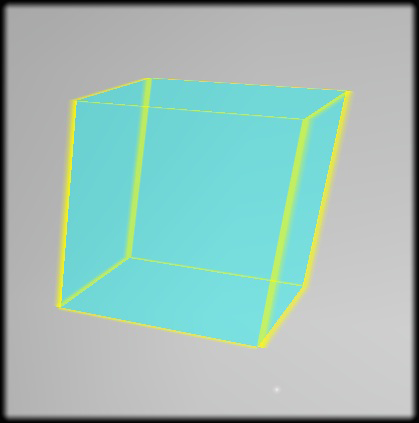

LoginZone Bug
You may find on some versions of SLOODLE that the LoginZone only works if your avatar starts in the same sim as the LoginZone.
Summary

{kind=link}
Login Zone
Detail
- When rezzed or moved, sends its position back to the Sloodle server, so the Sloodle server always knows the coordinates of the Login Zone object in SL.
- When a user logged into Moodle wants to enter SL they can go to a web page on their Moodle site, eg. http://my.moodle.site/mod/sloodle/login/sl_loginzone_entry.php
A random position is chosen for them inside the Login Zone, and they are given an SLURL to teleport them to that position.
- When a user appears inside the Login Zone, it tells the server which avatar has arrived there and the server links the avatar information with the Moodle account to which it assigned that position.
Known bugs / limitations
- Only works for a single prim, which limits the size to 10m-cubed. Would be more secure with a bunch of prims joined together to make a bigger area.
- Even with a bunch of prims joined together, may be possible to exploit by a brute-force attack with lots of alt's or a single avatar getting very lucky.
- Doesn't work if the user has a teleport hub set.
- Setup per sloodle install. Could have courses in different places; Maybe better per course?
Next steps
Make a version with a bunch of prims joined together.
| This page is part of the SLOODLE documentation | |||
|---|---|---|---|
| Docs: Users | Administrators | Developers | |||
| Document Top Sloodle.org | |||